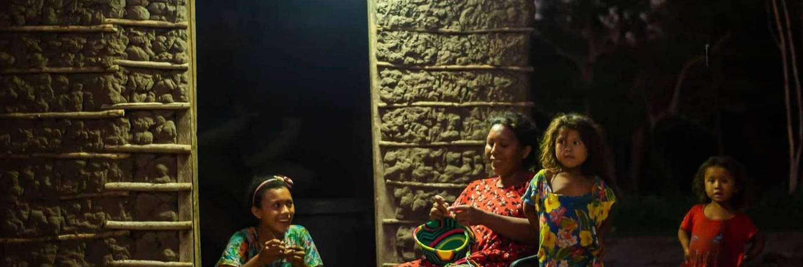

Energy Coop · Embajada
Comunidades energéticas
Albert Kobus · 11 nov 2026 · cleantechhub.net
LATAM
Hub climático
O&M
Cooperativas energéticas
Demo
energiacoop.cleantechhub.net
CleantechHUB como socio contra la pobreza energética: datos públicos, cooperativas de O&M y ecosistema cleantech en Colombia — sin prometer fondos MW.
Foto: Tierra Grata · comunidades rurales, Colombia